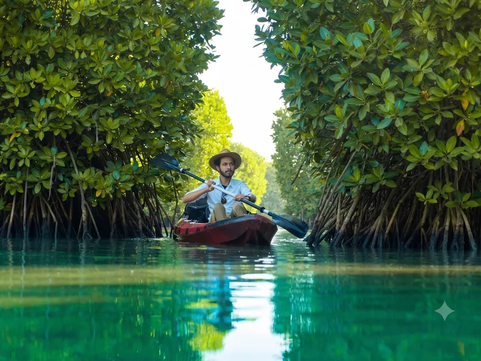
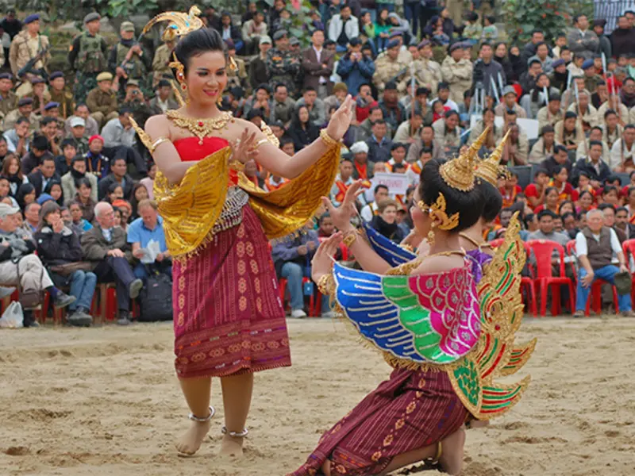
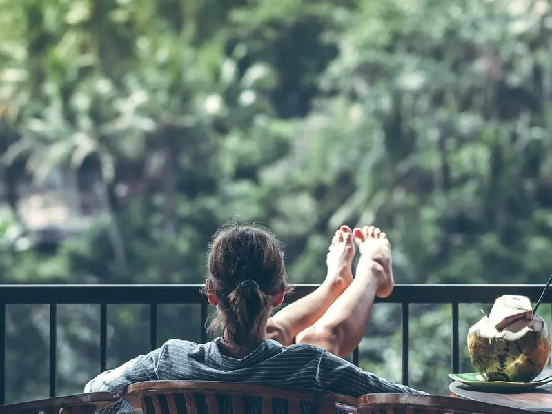
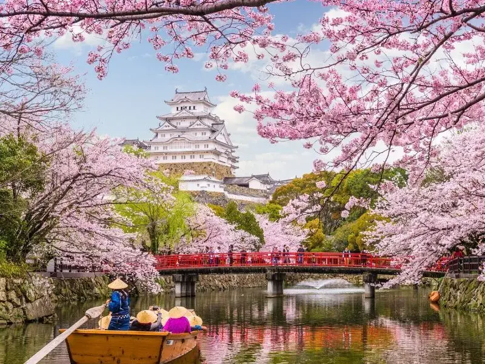

Wayanad & the Malabar Coast
Six slow nights through Kozhikode's legendary food streets, the plantation hills of Wayanad and Kannur's theyyam season, the Kerala that the backwater brochures never reach.
There are two Keralas. One has houseboats, brochures and traffic. The other is Malabar, the northern third of the state, where the food is the best in Kerala by the admission of most Keralites, the beaches are empty, and between November and March the theyyam ritual turns village temple courtyards into something you will not see anywhere else on earth. Most itineraries never come north of Kochi. Their loss is the entire premise of this journey.
We begin with food, because in Kozhikode you should: the halwa lanes of SM Street, a Moplah home-style biryani lunch, and evening chaya-and-banana-fry culture done sitting down, slowly, with someone explaining what you are eating. Then up the ghat road to Wayanad, where plantation mornings smell of pepper and cardamom and the schedule loosens to walks, spice gardens and the Edakkal caves' Neolithic carvings. The finale is Kannur in theyyam season, an all-night ritual where a performer becomes a god before dawn. We attend as guests of the village, with our escort briefing you carefully on etiquette; this is worship, not a show, and we treat it that way.
Built for slow travellers and eaters. If your best travel memories are meals and mornings rather than monuments, this journey was designed off the back of yours.
Day by day
- Day 1
Arrive Kozhikode. Sunset at the beach promenade and an easy first dinner, the serious eating starts tomorrow.
- Day 2
Kozhikode on foot and by taste: SM Street halwa makers, the spice wholesale lanes, Moplah biryani lunch in a family-run institution. Afternoon rest, evening chaya culture.
- Day 3
Drive up the Thamarassery ghat to Wayanad (2.5 hrs). Afternoon plantation walk, pepper, coffee, cardamom, with the planter's family. Quiet night in the hills.
- Day 4
Edakkal caves in the morning (a genuine but short climb, we go early), Karapuzha backwaters by evening. Optional pottery village visit.
- Day 5
Slow morning in the plantations. Afternoon drive down to Kannur (3 hrs). Evening briefing on theyyam, what it is, how to be present at it.
- Day 6
Pre-dawn theyyam at a village kavu (calendar-dependent; November–March is the season and we plan around confirmed performances). Rest, then Kannur's handloom weavers and St. Angelo Fort. Farewell Malabar seafood dinner.
- Day 7
Drive to Kannur airport (30 minutes) for departure.
What’s included
- All accommodation, 6 nights
- All breakfasts and dinners, including the Moplah biryani lunch in Kozhikode
- Private air-conditioned vehicle throughout
- Plantation walk, theyyam attendance with village hosts, handloom visit
- Zubilant escort throughout
- Flights to Kozhikode and from Kannur
- Lunches, except where noted
- Entry fees at Edakkal and St. Angelo Fort
- Travel insurance
Where you stay
In Kozhikode, a comfortable city hotel a short ride from the food streets. In Wayanad, a plantation stay where dinner comes from the garden and the silence is total. In Kannur, a small property near the quieter beaches. All three are places we have returned to for years, chosen for their kitchens first.
Who it’s for
Slow travellers, food-first travellers, couples, and anyone on their second or third Kerala trip who suspects there is more. Not for first-timers wanting houseboats and Kovalam, that is a different journey, and the theyyam night involves late hours and standing; skip it without guilt if that is not you, the escort will arrange a gentler evening.
At a glance
The facts most itineraries leave out. We print them because they are what decides whether this trip suits your group.
- Max altitude
- 900 m
- Longest drive
- 3 hours, one winding ghat section
- Walking
- 3–4 km/day; Edakkal involves a steep 30–40 minute climb, optional
- Lift at every hotel
- Mostly (plantation stay is low-rise, ground-floor rooms on request)
- Nearest hospital
- Kozhikode Medical College, in city; Kalpetta and Kannur district hospitals en route
You might also like.

Nagaland: Hornbill Festival & the Naga Hills
Six nights around the first week of December, the Hornbill Festival at Kisama, the villages above Kohima, and Khonoma, Asia's first green village, with the permits, beds and logistics that make or break this trip handled before you land.

Kumbakonam & the Cauvery Delta: Temples of the Cholas
Five nights deep in the Cauvery delta, Kumbakonam's living temple towns, the two quieter Great Chola temples, and the Danish surprise of Tranquebar, the Tamil heritage circuit for travellers who have already done the obvious.

Japan in Cherry Blossom Season
Eight nights from Tokyo to Osaka by rail through Hakone and Kyoto, timed for the two weeks the blossom actually holds, with a November foliage departure for those who cannot get April leave.